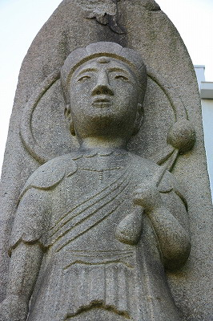
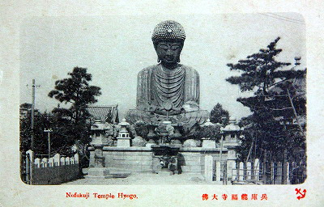

兵庫大仏/兵庫県
兵庫大仏/兵庫県
久々に兵庫大仏に寄ってみた。
兵庫大仏とは「自称」日本三大仏のひとつである超有名大仏。過去に何度か訪れたことがあるが、思い返してみたらこのサイトでは採りあげてませんでしたね。なので今さらながらの感ありありですが、あえて紹介させていただきますよ。
兵庫大仏はJR兵庫駅の近くにある。また神戸港の西側にも近い。
神戸の繁華街からはやや離れた微妙なお土地柄ではあるがかつては新開地と並ぶ繁華街だっという。今では信じられないんですけど…
で、大仏がおわすのは能福寺というお寺。
平清盛が福原遷都の際に剃髪して入道したという由緒正しきお寺である。しかも創建は延暦24（805）年って…
で、境内には平清盛の墓もある。
確か次期清盛のマツケンがお参りに来たとか。俺は夢！って言って絶命する渡哲也の清盛が良かったなー。
閑話休題。
大仏さんのハナシでしたね。
市街地にある大仏さんとしてはかなり立派な部類に属するといえよう。
平成3（1991）年建立。高さは11ｍ。サイズ的にいえば鎌倉大仏クラスですね。

で、何で日本三大仏かといえば、奈良の大仏、東大寺の華厳宗管長と鎌倉大仏の高徳院貫主の公認を受けたからということらしい。
さらに御姿監修は全仏像野郎リスペクト必至の佛マイスター、西村公朝師。
正直言って偉い人に御墨付きを貰ったから自分も偉い、的な姿勢なのだとしたらチョット疑問を感じざるを得ないが、まあ、別に三大仏だから特別に偉いというわけではないし、ここの大仏さんの価値が上がる訳でも下がるわけでもないのでどうでもいいです。
そもそも日本三大仏といったら1位は牛久大仏だっつーの。
ほら、香炉の小僧も苦笑いですよ。
てなわけで日本三大仏の三番手争いはおいておく。俺は純粋に大仏さんだけと対峙するのである。
中々立派な大仏さんである。いや、かなり出来の良い大仏さんであると言わざるを得まい。

ただし正面の完璧っぷりに比べて背後の雑多な塗りにだけは苦言を呈させていただく。スプレーでピャーって感じ。
イタズラ書き、じゃないよね？
表情の滑らかさ、全身のバランス、衣の過不足ない皺の表現。素晴らしい出来じゃないですか。
螺髪、つまりパンチパーマのツブツブの一個一個がキッチリ作りこまれている細かさ。
これを大仏ナード界では「パンチ立ってる」と表現します。大仏検定に出るから憶えておいてね（ウソ）。
塑像としては素晴らしい大仏でしたよ。素晴らしすぎて突っ込みどころがないのが唯一の欠点、な程です。
大仏さんの傍らにあった石仏は突っ込みたくなり要素が満載だったのに〜。

さて、陽も傾いてきた。少し周辺を散歩しよう。
お寺の裏手に墓地がある。チョットお邪魔しますよ。
お墓の一角には素敵なコンクリ仏があった。
兵庫大仏とは関係ないと思われるが、こちらもコンクリ仏としては相当レベル高い仕上がりとなっている。
ただし背中の変な羽みたいなモノの用途が不明だったのが。
で、その対面にあったコンクリ仏。おそらく同じ作者のものと思われる。
こうやって古今東西、様々な素材の仏像が生まれてくるが、それらが関西ではソフィスティケートされてしまうきらいがある。
完璧すぎて突っ込みも出来ません。
ところで。
この兵庫大仏さん、平成生まれのヒヨッ子と侮るなかれ。何を隠そう二代目なのだ。
初代の大仏建立は明治24（1891）年。

国際港としてスタートして間もない神戸港のランドマークだったはず。
如何であろうこの雄姿。ブラザー系の素敵なアフロヘアー。
こちらの大仏さんの方が今の大仏さんよりもバランスはアレですけど遥かに印象深い。つまりグッド大仏ということ。
美しいから良い仏像だ、なんてことは全然ないんだからねっ。
この初代大仏のインパクトと現在の大仏さんの併せ技であれば日本三大仏を名乗るのも致し方なし、なのかも。
ここで思うのは今まで当サイトではあまりにもコンクリ大仏にこだわりすぎてそれ以前の近代大仏史の流れを疎かにしていたきらいがあるので、ここは反省の意味も込めて大型コンクリ大仏誕生以前の大仏史を軽くおさらいしておく。
近世において大仏は結構あちこちで造られてきた。
例えば江戸の六大仏などは今でも見ることが出来る。
そんな中、幕末頃から見世物の世界で大仏が活躍し始めた。
いわゆる籠細工の見世物興行で大仏が人気を博したのである。
これ以降、お寺に奉納される鋳造製のガチ大仏とは別に見世物大仏が登場する。
巨大な仏像というスタンスと見世物としての巨像、この大仏の持つ2つの属性は現在まで引き継がれていくことになる。
見世物としての大仏として象徴的なのが今の台東区にあった佐竹が原の大仏である。
明治18年頃に作られたこの大仏は竹の骨組みに紙を貼ったものだが、規模は相当大きく、しかも中では閻魔大王のカンカン踊りを見せていたというワル乗りっぷり。
作ったのは何と日本近代彫刻界の巨匠、高村光雲である。
その後も見世物大仏はあちこちに登場し、ついには海を越えてサンフランシスコにその姿を現すことになる。
大正4（1915）年パナマ運河開通を記念したパナマ太平洋博覧会がサンフランシスコで開催されたのだが、その際の日本企業関連のアトラクションブースである「日本の美」のパビリオンには入口に鎌倉大仏を模したハリボテ大仏が鎮座していて外国人に好評を博したという。
ちなみに高さは１０８尺、つまり約33ｍ。
↑パナマ太平洋博覧会の大仏
作ったのは万博キングと呼ばれた興行師の櫛引弓人。
その後、大正11年の日本最初のコンクリ仏である呼子大仏、さらに日本最初の本格的大型コンクリ大仏である聚楽園大仏の誕生する昭和2（1927）年を待たねばならない。
ハナシが横道に逸れまくってますが、要はこれらの見世物としてのハリボテ大仏こそが近代大仏史黎明期の礎となっているということが言いたかった訳です。
その礎から聚楽園大仏、引いては牛久大仏にまで至るのだ。
2011.03.
珍寺大道場 HOME